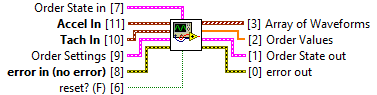
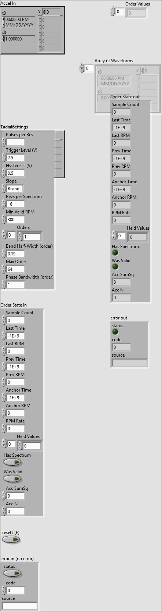
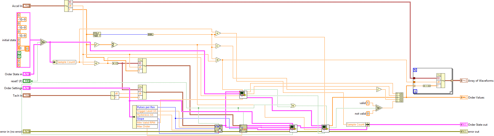

Order analysis of one accelerometer block + one pulse-tach block, for the FlexLogger plug-in Process.vi (same role as PowerSpectrum.vi).
Wire Accel In / Tach In from Read 1D Wfm, Order Settings and Order State from class data, reset? TRUE on the first call after Configure Session. Array of Waveforms goes to Write 1D Wfm (Auto Calculate T0 = TRUE): one 1-point waveform per channel, t0 = block t0, dt = block length. Order Values carries the same numbers (for tests). Write Order State out back to class data.
Channels: 0 RPM, 1 RPM Rate (rpm/s), 2 Order 1 (g rms), 3 Order 1 Phase (deg), 4 Order 2, 5 Order 3.57, 6 Order 4, 7 Order 24 (g rms), 8 Total Order RMS, 9 Residual RMS, 10 Overall RMS (g rms), 11 Data Valid (0/1).
S&V chain: OAT Analog Tacho Process -> OAT Convert to Even Angle Signal -> OA Order Spectrum (OAT Order Power Spectrum + SVFA Power in Band, OAT Order Magnitude and Phase). Order values are held between spectra and while Data Valid = 0.


